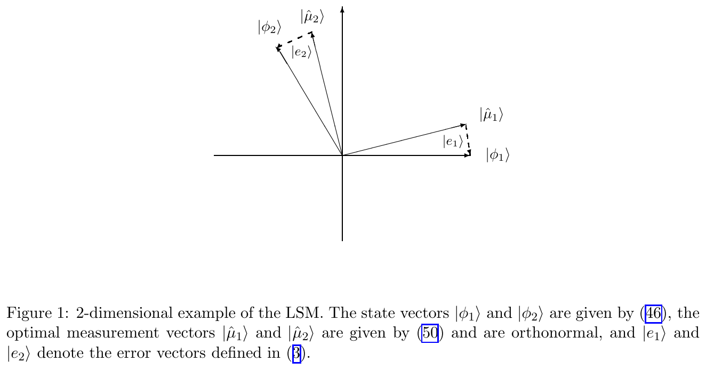
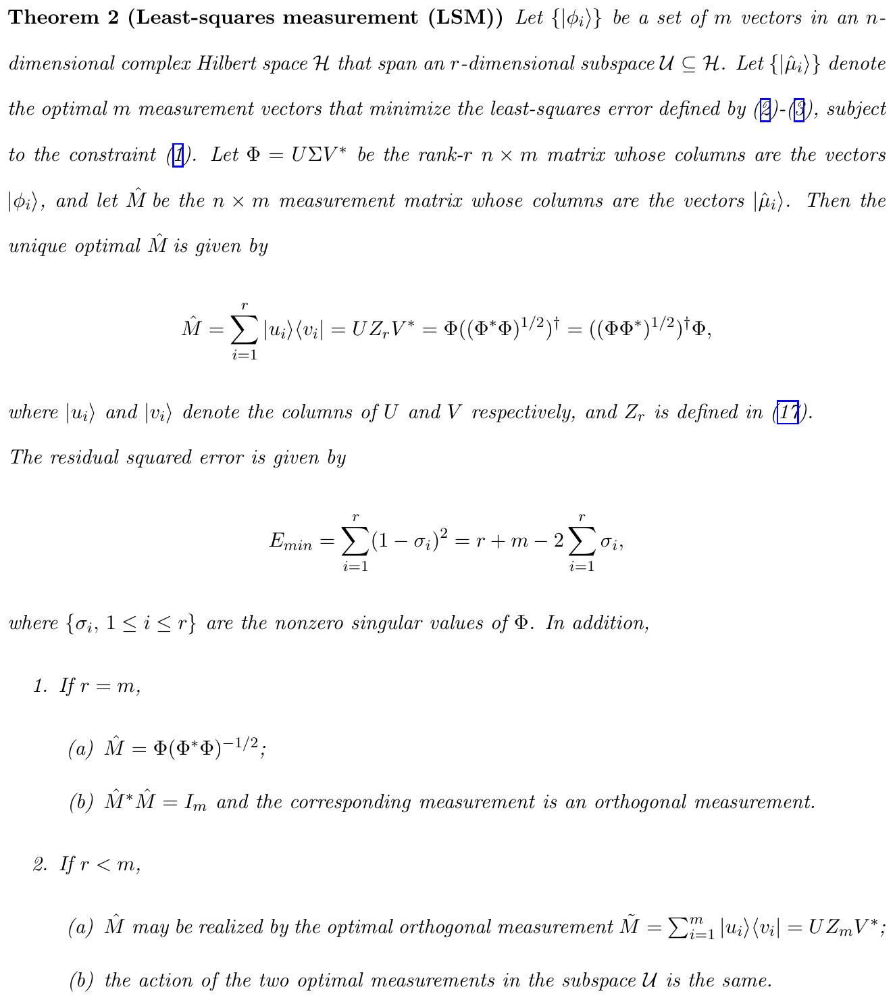
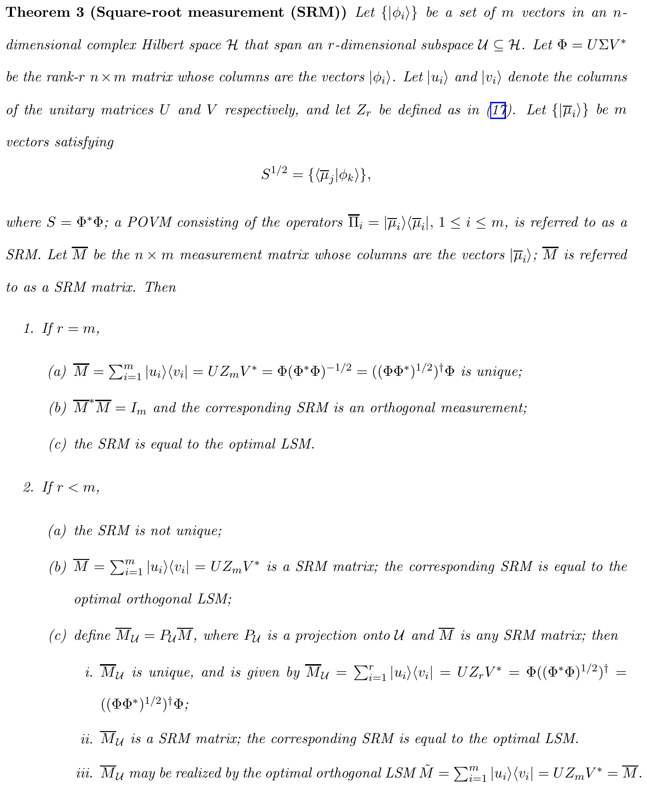
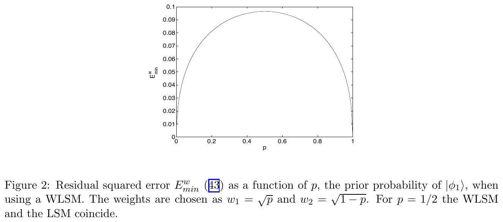
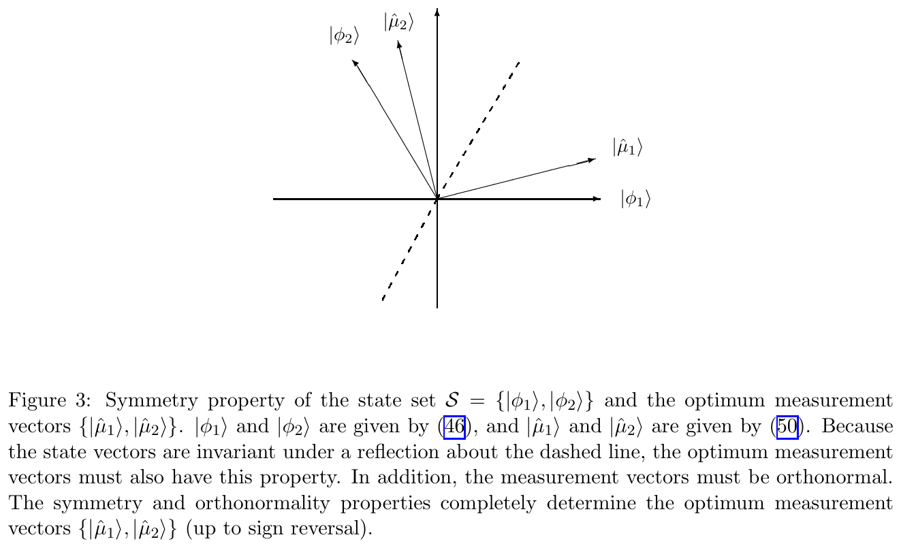
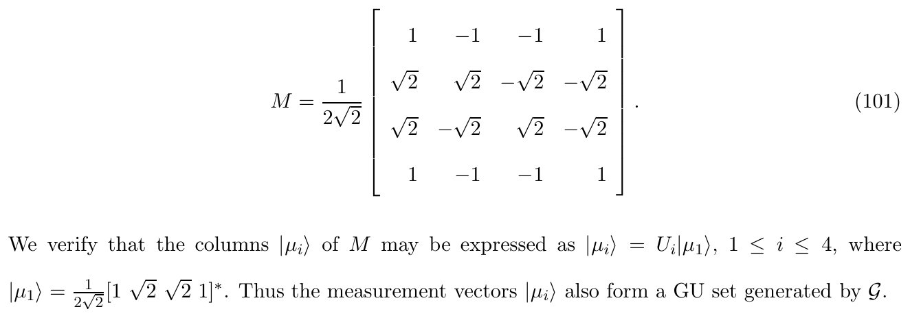
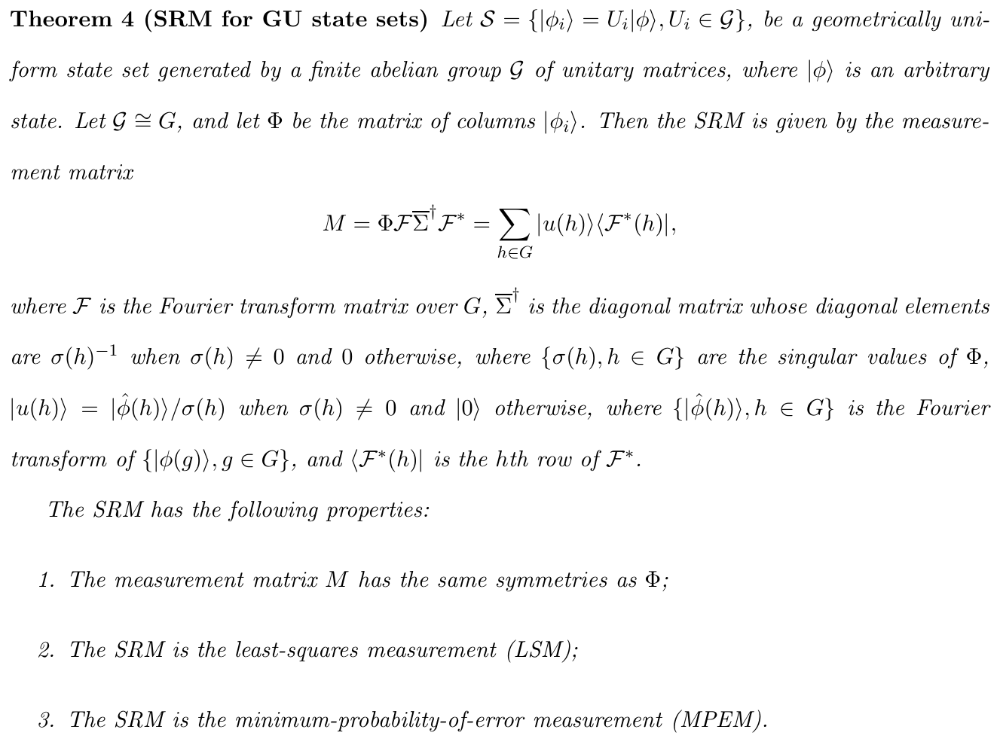
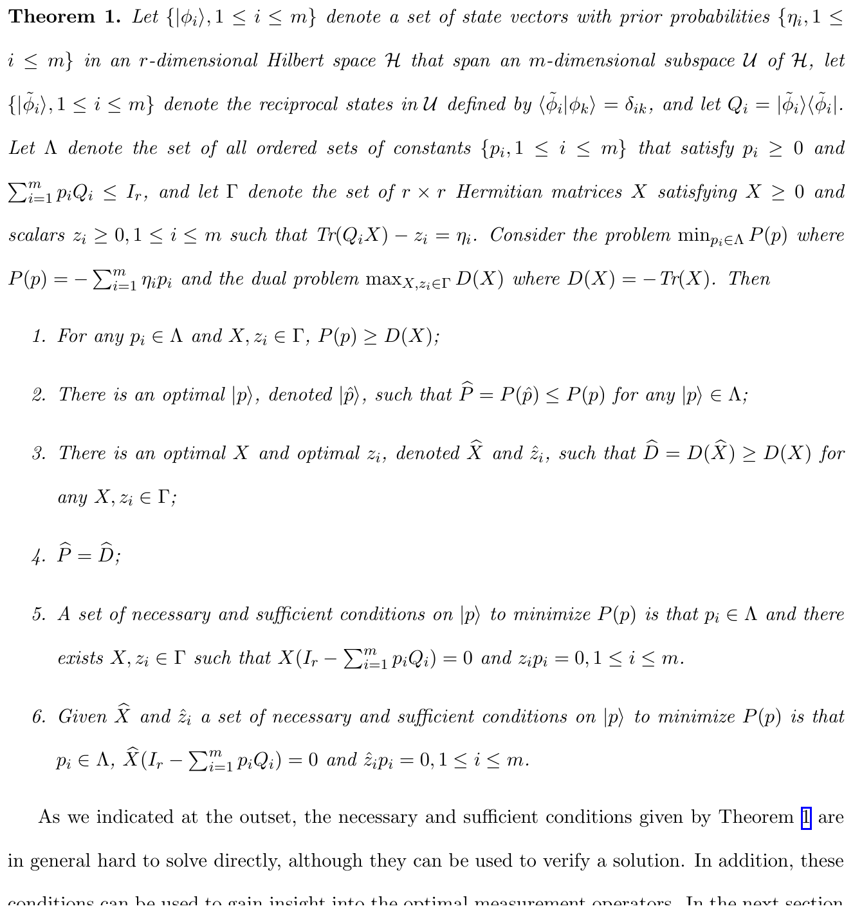
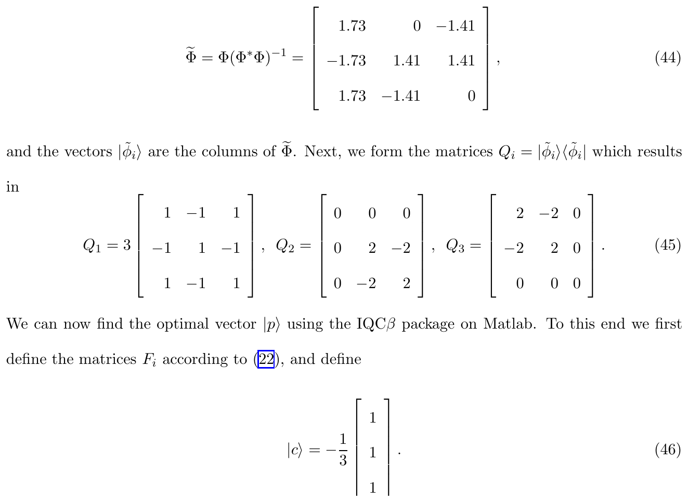
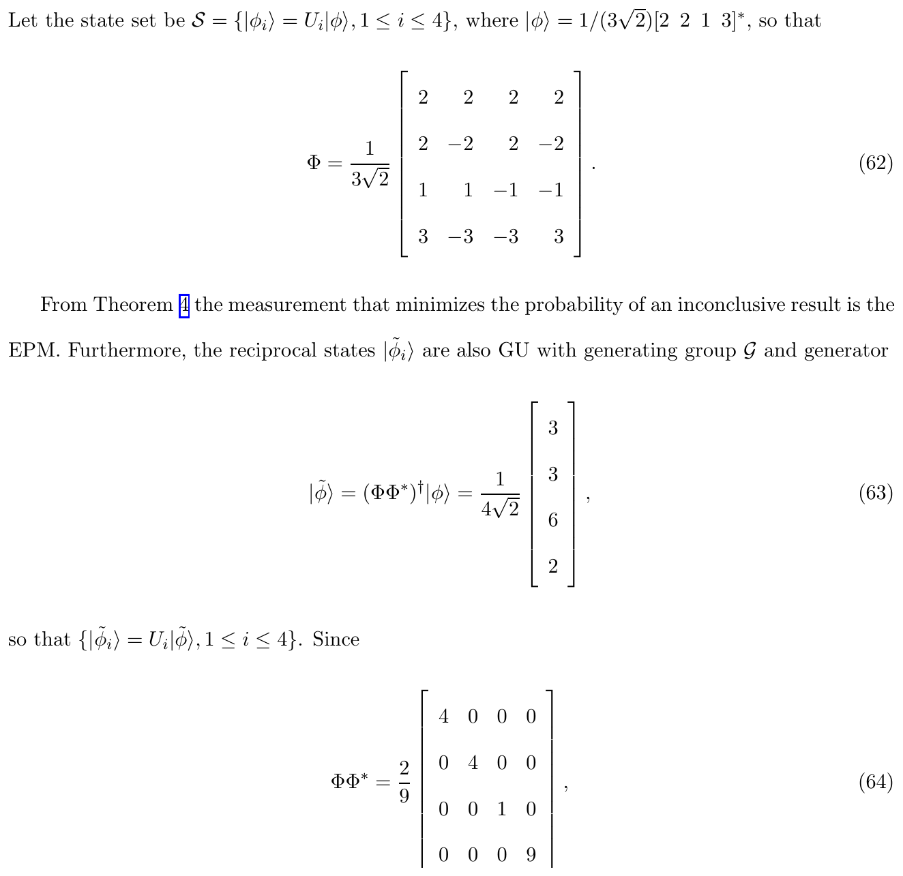

Module 07 · Square-root measurement (SRM)
From least squares to optimality for geometrically uniform sets, and unambiguous discrimination via SDP
- Build the SRM \(M=\Phi(\Phi^*\Phi)^{-1/2}\) from the Gram matrix and compute \(P_e\)
- Explain why the SRM is optimal for geometrically uniform sets
- Compare the SRM with Helstrom, the EPM and the SDP
📚 Source documents of this module (each file checked against its actual content)
| File in the archive | Paper (verified against its content) | Pages | Status | Link | Used in this module |
|---|---|---|---|---|---|
| Eldar_Forney_2001_Square_Root_Measurement.pdf | On Quantum Detection and the Square-Root Measurement Y. C. Eldar, G. D. Forney Jr. · 2001 · IEEE Trans. Inf. Theory 47(3), 858-872 (arXiv:quant-ph/0005132, 48 tr.) | 48 | Read, title matches | DOI · arXiv | Thms 2 to 4, Eqs. (18) to (105), Figs. 1 to 3 and all GU examples |
| Eldar_2003_Mixed_Quantum_State_Detection.pdf | A Semidefinite Programming Approach to Optimal Unambiguous Discrimination of Quantum States Y. C. Eldar · 2002 · arXiv:quant-ph/0206093v2 (36 tr.) | 36 | Read, title matches | DOI · arXiv | The file name and README say "Mixed State Detection with Inconclusive Results" but the real content is unambiguous discrimination of linearly independent pure states; all citations follow the real content |
Lecture (slides)
Use the ← → keys or the buttons; ⛶ opens full-screen presentation.
The problem of discriminating non-orthogonal states
- \(\eta_i\)prior probability of state \(i\)
- \(\Pi_i\)measurement operator for outcome \(i\)
If the \(|\phi_i\rangle\) are orthogonal, \(\Pi_i=|\phi_i\rangle\langle\phi_i|\) gives \(P_e=0\). When they are not, no measurement separates them perfectly, so the task is measurement design (Eldar and Forney 2001, Sec. 1).
Rank-one POVMs and the resolution of the identity
- \(|\mu_i\rangle\)measurement vector (need not be normalised or orthogonal)
- \(P_{\mathcal U}\)projector onto \(\mathcal U=\mathrm{span}\{|\phi_i\rangle\}\), \(\dim\mathcal U=r\)
The paper considers rank-one POVMs for \(m\le n\) normalised vectors in an \(n\)-dimensional space (Sec. 2.1). The extra operator \(\Pi_0=I-P_{\mathcal U}\) has probability 0 and is dropped.
The Gram matrix and linear independence
- \(\Phi\)the \(n\times m\) matrix whose columns are \(|\phi_i\rangle\)
- \(r=\operatorname{rank}S\)dimension of \(\mathcal U\); linearly independent when \(r=m\)
For coherent states \(|\alpha_k\rangle\): \(S_{jk}=\exp\!\big(-|\alpha_j|^2/2-|\alpha_k|^2/2+\alpha_j^{*}\alpha_k\big)\). For \(m\) PSK states of amplitude \(\sqrt{\bar n}\), \(S_{jk}=\exp\!\big(-\bar n+\bar n\,e^{2\pi i(k-j)/m}\big)\), always invertible so \(r=m\).
The SVD of the state matrix
- \(\sigma_i^2\)non-zero eigenvalues of \(S=\Phi^*\Phi\)
- \(|u_i\rangle,|v_i\rangle\)the \(U\)-basis (in \(\mathcal H\)) and \(V\)-basis (in \(\mathbb C^m\))
It is a "square root" of an eigendecomposition: \(|u_i\rangle\langle v_i|\) is a transjector mapping an eigenspace of \(S\) onto one of \(T=\Phi\Phi^*\) (Sec. 3.1).
| Quantity | Size | Role |
|---|---|---|
| \(S=\Phi^*\Phi\) | \(m\times m\) | Gram |
| \(T=\Phi\Phi^*\) | \(n\times n\) | same non-zero eigenvalues |
Optimality conditions of the minimum-error measurement
- \(W_i=\eta_i\rho_i\)weighted density operator
- \(\Gamma\)Hermitian operator; the second condition is a matrix inequality
These conditions are necessary and sufficient for the minimum-probability-of-error measurement (MPEM) but rarely solvable in closed form. Typical use: test a candidate such as the SRM against them (Sec. 8.3).
The Helstrom reference for two states
Coherent BPSK: \(\langle\alpha|{-}\alpha\rangle=e^{-2\bar n}\), so \(P_e^{\mathrm{opt}}=\tfrac12(1-\sqrt{1-e^{-4\bar n}})\). This is the reference for the SRM at \(m=2\); later slides show the SRM matching it exactly when \(\eta_0=\tfrac12\).
Geometry of the least-squares measurement

Nguồn: Eldar & Forney, IEEE Trans. Inf. Theory 47(3), 2001, Fig. 1 (tr. 46)
The figure shows the idea: find measurement vectors \(|\hat\mu_i\rangle\) closest to the states \(|\phi_i\rangle\) while being orthonormal; \(|e_i\rangle=|\phi_i\rangle-|\mu_i\rangle\) is the error vector.
The least-squares problem for measurement vectors
- \(M\)the \(n\times m\) matrix of measurement vectors \(|\mu_i\rangle\)
Expanding by the SVD, \(E=\sum_i\langle d_i|d_i\rangle\) with \(|d_i\rangle=\sigma_i|v_i\rangle-|a_i\rangle\) and \(\{|a_i\rangle\}\) orthonormal (Eq. 13). Since \(\{|v_i\rangle\}\) are orthonormal, the minimum is at \(|a_i\rangle=|v_i\rangle\) (Eq. 14).
The LSM solution: keep the rotations, drop the stretch

Nguồn: Eldar & Forney, IEEE Trans. Inf. Theory 47(3), 2001, Thm 2 (tr. 18)
Definition of the square-root measurement
- \(S^{-1/2}\)inverse square root of the Gram matrix
So the SRM coincides with the LSM (Sec. 7). The measurement vectors are orthonormal, so it is an orthogonal measurement, not a general POVM.
Theorem 3: uniqueness of the SRM

Nguồn: Eldar & Forney, IEEE Trans. Inf. Theory 47(3), 2001, Thm 3 (tr. 25)
- \(r=m\): \(M=\Phi(\Phi^{*}\Phi)^{-1/2}\) is unique, \(M^*M=I_m\).
- \(r\lt m\): the SRM is not unique; \(M_{\mathcal U}=P_{\mathcal U}M\) is.
Weighted SRM and weighted least squares

Nguồn: Eldar & Forney, IEEE Trans. Inf. Theory 47(3), 2001, Fig. 2 (tr. 47)
Linearly dependent states and Neumark’s theorem
- \(Z_r\)the \(n\times m\) matrix with identity block \(I_r\) top-left
When \(r\lt m\) there are at most \(r\) orthonormal vectors in \(\mathcal U\). The orthogonality constraint pushes the measurement vectors out of \(\mathcal U\); projecting them back gives the optimal POVM, in the spirit of Neumark’s theorem (Sec. 4.1).
Peres–Wootters as a special case of the SRM
The polarisations \(a,b,c\) are \(60^\circ\) apart (0°, 60°, 120°) with equal priors. The Peres-Wootters measurement is the SRM and is least-squares optimal (Sec. 7); the set is cyclic, so it also minimises the error probability (Sec. 8.5C).
| Measurement | Criterion |
|---|---|
| Peres–Wootters (1991) | hand-built for one example |
| SRM \(\Phi(\Phi^*\Phi)^{-1/2}\) | general formula, equals PW here |
Two-vector example in 2D: building the Gram matrix
- Eigenvalues of \(S\): \(\sigma_1^2=1.500,\ \sigma_2^2=0.500\) (that is \(\tfrac32\) and \(\tfrac12\)).
- \(S^{-1/2}=\begin{pmatrix}1.12&0.30\\0.30&1.12\end{pmatrix}\) (Eq. 51).
- \(\hat M=\Phi S^{-1/2}=\begin{pmatrix}0.97&-0.26\\0.26&0.97\end{pmatrix}\) (Eq. 49), columns \(|\hat\mu_1\rangle,|\hat\mu_2\rangle\).
2D example: measurement vectors, residual and error probability
Residual \(E_{\min}=\sum_i(1-\sigma_i)^2=(1-1.2247)^2+(1-0.7071)^2=0.1363\). The SRM error with equal priors is \(P_e=0.0670\), equal to the Helstrom value \(\tfrac12(1-\sqrt{1-1/4})=0.0670\) because \(m=2\).
Every two-state set is geometrically uniform

Nguồn: Eldar & Forney, IEEE Trans. Inf. Theory 47(3), 2001, Fig. 3 (tr. 47)
The four-state geometrically uniform example

Nguồn: Eldar & Forney, IEEE Trans. Inf. Theory 47(3), 2001, Eq. (101) (tr. 38)
With \(|\phi\rangle=\tfrac12(1,1,1,1)^{*}\) and \(|\phi_i\rangle=U_i|\phi\rangle\), the Gram entries are \(\tfrac12\{2,-1,0\}\) (Eq. 96). The four states sum to zero, so they are linearly dependent (\(r=3\lt m=4\)).
The SRM for coherent BPSK equals the Helstrom bound
| \(\bar n\) | \(P_e^{\mathrm{SRM}}\) | \(P_e^{\mathrm{Helstrom}}\) |
|---|---|---|
| 0.1 | 0.212911 | 0.212911 |
| 0.25 | 0.102470 | 0.102470 |
| 0.5 | 0.035063 | 0.035063 |
| 1 | 0.004600 | 0.004600 |
| 2 | 0.000084 | 0.000084 |
Numerical check (numpy): for every \(\bar n\) in the table, \(P_e^{\mathrm{SRM}}=P_e^{\mathrm{Helstrom}}\) to machine precision.
Three coherent PSK states step by step
- The Gram matrix is a Hermitian circulant; eigenvalues \(\lambda_h=\sum_k s_k e^{-2\pi i hk/3}\): 0.2279, 0.9145, 1.8575.
- \(\sum_h\sqrt{\lambda_h}=2.7966\), so \(P_c=\tfrac{1}{9}\big(\sum_h\sqrt{\lambda_h}\big)^2=0.8690\).
- Hence \(P_e^{\mathrm{SRM}}=0.1310\); a numerical optimisation loop gives the same value (geometrically uniform set).
Table of the SRM \(P_e\) against \(M\) and \(\bar n\)
| \(M\backslash\bar n\) | 0.25 | 0.5 | 1 | 2 |
|---|---|---|---|---|
| 2 | 0.10247 | 0.03506 | 0.00460 | 0.00008 |
| 3 | 0.26882 | 0.13098 | 0.02864 | 0.00123 |
| 4 | 0.41870 | 0.26174 | 0.09242 | 0.00955 |
| 8 | 0.70387 | 0.60654 | 0.44881 | 0.22297 |
At \(M=8,\ \bar n=0.25\) the smallest eigenvalue is about \(10^{-7}\), making the Gram nearly singular: the SRM is still computable but needs double precision and a two-way cross-check.
Geometrically uniform sets: the SRM from the Fourier transform

Nguồn: Eldar & Forney, IEEE Trans. Inf. Theory 47(3), 2001, Thm 4 (tr. 35)
Proof that the SRM is optimal for GU sets
The last inequality is Cauchy-Schwarz. Consequence: for a geometrically uniform set the SRM is both least-squares optimal and minimum-error, generalising Ban et al. (1997).
A sufficient condition beyond geometric uniformity
The condition concerns the diagonal of \(S^{1/2}\) (with \(\Phi_w=\Phi\,\mathrm{diag}(\sqrt{\eta_i})\)), hard to test directly. Via the SVD: if all entries of \(V\) have equal magnitude, \(\langle v^i|\Sigma|v^i\rangle\) is constant and the SRM is optimal. For GU sets \(V=\mathcal F\) has entries of equal magnitude (Sec. 8.3).
Limits of the SRM under unequal priors
| Case | \(P_e^{\mathrm{SRM}}\) | Optimum |
|---|---|---|
| BPSK, \(\eta_0=0.5\), \(\bar n=0.5\) | 0.0351 | 0.0351 |
| BPSK, \(\eta_0=0.7\) | 0.0307 | 0.0293 |
| BPSK, \(\eta_0=0.9\) | 0.0156 | 0.0123 |
| Three states of Eldar (2003), \(\eta=(.6,.2,.2)\) | 0.2746 | 0.2440 |
Three traps when computing the SRM
Unambiguous discrimination and the SDP of Eldar (2003)

Nguồn: Eldar, arXiv:quant-ph/0206093, 2002, Thm 1 (tr. 13)
Semidefinite programming and the dual conditions
The problem is convex, so it converges to the global optimum in polynomial time; each iteration costs about \(O(m^4)\) with block-diagonal structure (Sec. 5).
Three-vector example: the SDP drops one state

Nguồn: Eldar, arXiv:quant-ph/0206093, 2002, Eq. (44)-(46) (tr. 20)
Optimum (checked by SLSQP): \(p=(0,\tfrac16,\tfrac16)\), i.e. state 1 is dropped entirely; \(P_D=\tfrac19=0.111\). The paper lists \(0.17\) for the last two entries (Eq. 47).
The EPM is optimal for the right priors
- \(\sigma_i^2\) of \(\Phi\): 2.4315, 0.5000, 0.0685.
- The last row of \(V^{*}\) has squares 0.606, 0.197, 0.197, i.e. \(\approx(0.6,0.2,0.2)\).
- With \(\eta=(0.6,0.2,0.2)\) the EPM is optimal, \(p=\sigma_3^2=0.0685\) (paper: 0.07).
Geometrically uniform sets: the EPM is optimal for unambiguous discrimination

Nguồn: Eldar, arXiv:quant-ph/0206093, 2002, Eq. (61)-(64) (tr. 27)
\(\Phi\Phi^{*}=\tfrac29\,\mathrm{diag}(4,4,1,9)\), smallest eigenvalue \(\tfrac29\) (Eq. 64). Each state is identified correctly with probability \(\tfrac29\approx0.222\).
Timeline: from optimality conditions to SDP
Real case: the four states of Eldar and Forney
Application direction for the turbulent FSO channel
In FSO communication each symbol \(i\) yields a mixed state \(\rho_i\) after averaging over Gamma-Gamma turbulence and receiver noise. The formula needs no optimisation, only matrix roots of size \(d\times d\) per sample. This is an assumed application direction that must be checked numerically before use.
| Method | Complexity in \(d\) | Optimal |
|---|---|---|
| SRM | \(O(d^3)\) | with symmetry |
| SDP | polynomial, many iterations | always |
Comparison of the measurements studied
| Method | Goal | Key formula | Optimal when |
|---|---|---|---|
| LSM / SRM | geometric closeness | \(\Phi(\Phi^{*}\Phi)^{-1/2}\) | geometrically uniform |
| Helstrom (\(m=2\)) | minimum error | \(\tfrac12(1-\sqrt{1-|\langle\phi_0|\phi_1\rangle|^2})\) | always |
| MPEM | minimum error | \(\Pi_i(W_j-W_i)\Pi_j=0\) | Eq. 78, 79 hold |
| EPM | unambiguous | \(p=\sigma_{\min}^2\) | Thm 2 and 4 (Eldar 2003) |
| SDP | general unambiguous | \(\min\,\langle c|p\rangle\ \text{s.t.}\ F(p)\succeq0\) | always |
Detailed notes
1. Plain words: what the SRM is
Picture each state as an arrow. To learn which arrow was sent we need a set of mutually perpendicular sights, one per answer. The SRM places the sights as close to their arrows as possible while staying perpendicular. Technically that is \(M=\Phi(\Phi^{*}\Phi)^{-1/2}\): take the Gram matrix, compute its inverse square root, then mix the states. With numbers: see the 2D example slide, where \(S^{-1/2}\) has entries 1.12 and 0.30.
2. Theoretical and historical background
Helstrom (1976), Holevo (1973) and Yuen, Kennedy, Lax (1975) gave optimality conditions for the minimum-error measurement, rarely solvable in closed form. Peres and Wootters (1991) hand-built a good measurement for three states; Hausladen and Wootters (1994) proposed the general "pretty good measurement"; Ban et al. (1997) proved it optimal for symmetric sets. Eldar and Forney (2001) gave a new characterisation (least squares) and proved optimality for every geometrically uniform set. Eldar (2003) turned to unambiguous discrimination and showed it is an SDP. All years come from the reference lists of the two papers.
3. Worked examples, step by step
- Take \(\bar n=0.5\).
- Gram: \(\langle\alpha|{-}\alpha\rangle=e^{-1}=0.3679\); eigenvalues \(1\pm0.3679\).
- \(P_c=\tfrac14(\sqrt{1.3679}+\sqrt{0.6321})^2=0.9649\).
- \(P_e=0.0351\), equal to Helstrom.
- \(M=4\), \(\bar n=0.5\); circulant \(4\times4\) Gram.
- Eigenvalues: 0.0505, 0.3033, 1.2137, 2.4324.
- \(P_e=1-\tfrac1{16}(\sum\sqrt{\lambda})^2=0.2617\).
- The set is cyclic so this is also the optimum (Thm 4).
- The three states of Eq. (43) in Eldar (2003) serve as three non-orthogonal labels with priors \((0.6,0.2,0.2)\).
- Weighted SRM: \(P_e=0.2746\).
- Numerical optimum: \(P_e=0.2440\).
- Gap 0.0306: with skewed priors the SRM is no longer optimal.
- The unknown phase is one of 8 equally spaced values (8-PSK), \(\bar n=2\).
- The set is cyclic so the SRM is optimal: \(P_e=0.2230\).
- Random guessing gives \(P_e=7/8=0.875\); the measurement cuts the error about 3.9-fold.
- \(\Phi\Phi^{*}=\tfrac29\mathrm{diag}(4,4,1,9)\) (Eq. 64).
- Smallest eigenvalue \(p=\tfrac29\).
- The inconclusive probability for each state is \(1-\tfrac29=\tfrac79\approx0.778\).
4. Case study and exam traps
Case: the three-vector example of Eldar (2003) shows the optimal SDP solution drops state 1 entirely (\(p_1=0\)); the EPM keeps all three but with much smaller probability (0.069 versus 0.167 per state).
- Forgetting the pseudo-inverse for linearly dependent states.
- Taking entrywise roots of the Gram instead of the matrix root.
- Omitting \(\sqrt{\eta_i}\) in the weighted SRM.
- Confusing \(|\alpha|\) and \(|\alpha|^2\) in \(\langle\alpha|\beta\rangle\).
Interactive practice
Quick self-check
Deep practice
Open the bank of 45 multiple-choice questions and 5 code-writing tasks →
References
- Y. C. Eldar, G. D. Forney Jr., On quantum detection and the square-root measurement, IEEE Trans. Inf. Theory 47(3), 858-872, 2001 (arXiv:quant-ph/0005132).
- Y. C. Eldar, A semidefinite programming approach to optimal unambiguous discrimination of quantum states, arXiv:quant-ph/0206093, 2002.
- P. Hausladen, W. K. Wootters, A pretty good measurement for distinguishing quantum states, J. Mod. Opt. 41, 2385-2390, 1994 (cited as [9] in Eldar-Forney).
- A. Peres, W. K. Wootters, Optimal detection of quantum information, Phys. Rev. Lett. 66, 1119-1122, 1991.